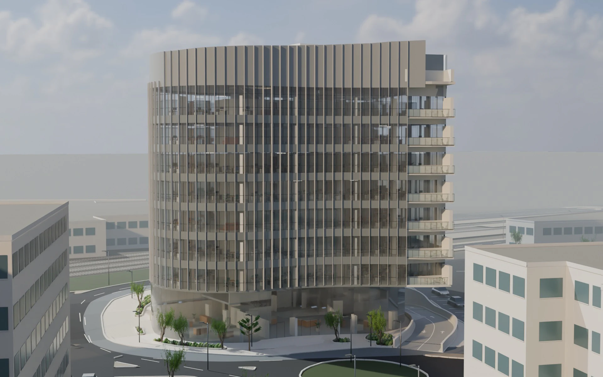

הבניין השלם
בית הלר
על המבט
מבט על המבנה וסביבתו הקרובה

מכינים את המבנה לצפייה
התצוגה המרחבית אינה זמינה
פתיחת ההדמיות השמורות ↗מכינים את ספריית המבטים…
לחצו על התמונה לפתיחתה בנפרד. תוכנית מקור; המודל התלת־ממדי לקומה עדיין בפיתוח.
מבט על המבנה וסביבתו הקרובה

מכינים את המבנה לצפייה
מכינים את ספריית המבטים…
לחצו על התמונה לפתיחתה בנפרד. תוכנית מקור; המודל התלת־ממדי לקומה עדיין בפיתוח.